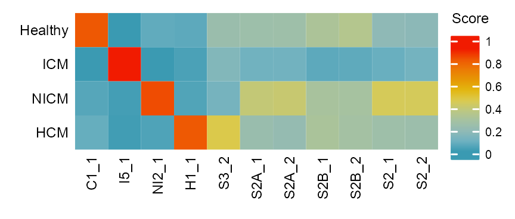
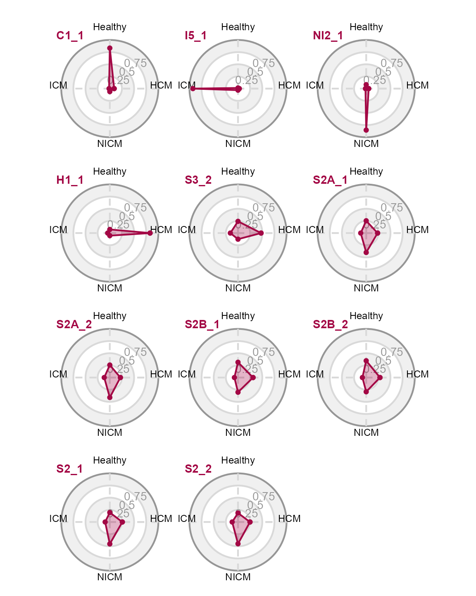

![]()
Sys.time()[1] "2023-08-12 07:23:34 CDT"This study establishes proof-of-concept for a cardiomyopathy diagnostic algorithm using chromatin accessibility signatures at a sequencing depth achievable by benchtop instruments.
Sys.time()[1] "2023-08-12 07:23:34 CDT"[1] "America/Chicago"PROJECT_DIR <- file.path(
"/Users/jialei/Dropbox/Data/Projects/UTSW",
"/Cardiomyopathy/atac-seq"
)Load required packages.
library(tidyverse)
## ── Attaching core tidyverse packages ─────────────────── tidyverse 2.0.0.9000 ──
## ✔ dplyr 1.1.2.9000 ✔ readr 2.1.4.9000
## ✔ forcats 1.0.0.9000 ✔ stringr 1.5.0.9000
## ✔ ggplot2 3.4.2.9000 ✔ tibble 3.2.1.9005
## ✔ lubridate 1.9.2.9000 ✔ tidyr 1.3.0.9000
## ✔ purrr 1.0.2.9000
## ── Conflicts ────────────────────────────────────────── tidyverse_conflicts() ──
## ✖ dplyr::filter() masks stats::filter()
## ✖ dplyr::lag() masks stats::lag()
## ℹ Use the conflicted package (<http://conflicted.r-lib.org/>) to force all conflicts to become errors
library(Matrix)
##
## Attaching package: 'Matrix'
##
## The following objects are masked from 'package:tidyr':
##
## expand, pack, unpack
library(patchwork)
library(extrafont)
## Registering fonts with R`%+replace%` <- ggplot2::`%+replace%`numpy version: 1.24.3 reticulate::py_config()python: /Users/jialei/.pyenv/shims/python
libpython: /Users/jialei/.pyenv/versions/mambaforge-22.9.0-3/lib/libpython3.10.dylib
pythonhome: /Users/jialei/.pyenv/versions/mambaforge-22.9.0-3:/Users/jialei/.pyenv/versions/mambaforge-22.9.0-3
version: 3.10.9 | packaged by conda-forge | (main, Feb 2 2023, 20:26:08) [Clang 14.0.6 ]
numpy: /Users/jialei/.pyenv/versions/mambaforge-22.9.0-3/lib/python3.10/site-packages/numpy
numpy_version: 1.24.3
numpy: /Users/jialei/.pyenv/versions/mambaforge-22.9.0-3/lib/python3.10/site-packages/numpy
NOTE: Python version was forced by RETICULATE_PYTHON# define function
compute_diff_peaks <- function(matrix,
group_a,
group_b,
num_thread = 4) {
cat(length(group_a), "\n")
cat(length(group_b), "\n")
cts <- matrix[, c(
group_a,
group_b
)]
cat(ncol(cts), "\n")
col_data <- data.frame(
sample = c(group_a, group_b),
category = c(
rep("group_a", length(group_a)),
rep("group_b", length(group_b))
)
)
BiocParallel::register(BiocParallel::MulticoreParam(num_thread))
dds <- DESeq2::DESeqDataSetFromMatrix(
countData = cts,
colData = col_data,
design = ~category
)
dds <- DESeq2::DESeq(dds)
res <- DESeq2::results(dds)
DESeq2::summary(res)
return(res)
}# sample metadata
samples_fresh_healthy <- c(
"F1_1", "F1_2", "F2_1", "F2_2",
"F5_1", "F5_2", "P3_1", "P3_2",
"P5_1", "P5_2", "P6_1", "P6_2"
)
samples_fresh_icm <- c(
"P104a_1", "P104a_2", "P117b_1", "P117b_2",
"P123b_1", "P123b_2", "P131a_1", "P131a_2",
"P92a_1", "P92a_2"
)
samples_fresh_nicm <- c(
"P114b_1", "P114b_2", "P59a_1", "P59a_2",
"P60a_1", "P60a_2", "P73a_1", "P73a_2",
"P87a_1", "P87a_2"
)
samples_fresh_hcm <- c(
"HOCM4_1", "HOCM4_2", "HOCM6_1", "HOCM6_2",
"HOCM9_1", "HOCM9_2", "HOCM11_1", "HOCM11_2",
"HOCM7_1", "HOCM7_2"
)samples <- list(
fresh_healthy = samples_fresh_healthy,
fresh_icm = samples_fresh_icm,
fresh_nicm = samples_fresh_nicm,
fresh_hcm = samples_fresh_hcm
)samples_combn <- combinat::combn(x = names(samples), m = 2)
diff_peaks <- purrr::map(seq_len(ncol(samples_combn)), \(x) {
sample_names_a <- samples[[samples_combn[, x][1]]]
sample_names_b <- samples[[samples_combn[, x][2]]]
cat(length(sample_names_a), "\n")
cat(sample_names_a, "\n")
cat(length(sample_names_b), "\n")
cat(sample_names_b, "\n")
compute_diff_peaks(
matrix = matrix_readcount_use,
group_a = sample_names_a,
group_b = sample_names_b,
num_thread = parallel::detectCores() - 1
)
})12
F1_1 F1_2 F2_1 F2_2 F5_1 F5_2 P3_1 P3_2 P5_1 P5_2 P6_1 P6_2
10
P104a_1 P104a_2 P117b_1 P117b_2 P123b_1 P123b_2 P131a_1 P131a_2 P92a_1 P92a_2
12
10
22 Warning in DESeqDataSet(se, design = design, ignoreRank): some variables in
design formula are characters, converting to factorsestimating size factorsestimating dispersionsgene-wise dispersion estimatesmean-dispersion relationshipfinal dispersion estimatesfitting model and testing
out of 206017 with nonzero total read count
adjusted p-value < 0.1
LFC > 0 (up) : 20685, 10%
LFC < 0 (down) : 16920, 8.2%
outliers [1] : 0, 0%
low counts [2] : 0, 0%
(mean count < 0)
[1] see 'cooksCutoff' argument of ?results
[2] see 'independentFiltering' argument of ?results
12
F1_1 F1_2 F2_1 F2_2 F5_1 F5_2 P3_1 P3_2 P5_1 P5_2 P6_1 P6_2
10
P114b_1 P114b_2 P59a_1 P59a_2 P60a_1 P60a_2 P73a_1 P73a_2 P87a_1 P87a_2
12
10
22 Warning in DESeqDataSet(se, design = design, ignoreRank): some variables in
design formula are characters, converting to factorsestimating size factorsestimating dispersionsgene-wise dispersion estimatesmean-dispersion relationshipfinal dispersion estimatesfitting model and testing-- replacing outliers and refitting for 3 genes
-- DESeq argument 'minReplicatesForReplace' = 7
-- original counts are preserved in counts(dds)estimating dispersionsfitting model and testing
out of 206019 with nonzero total read count
adjusted p-value < 0.1
LFC > 0 (up) : 7721, 3.7%
LFC < 0 (down) : 4264, 2.1%
outliers [1] : 0, 0%
low counts [2] : 31954, 16%
(mean count < 5)
[1] see 'cooksCutoff' argument of ?results
[2] see 'independentFiltering' argument of ?results
12
F1_1 F1_2 F2_1 F2_2 F5_1 F5_2 P3_1 P3_2 P5_1 P5_2 P6_1 P6_2
10
HOCM4_1 HOCM4_2 HOCM6_1 HOCM6_2 HOCM9_1 HOCM9_2 HOCM11_1 HOCM11_2 HOCM7_1 HOCM7_2
12
10
22 Warning in DESeqDataSet(se, design = design, ignoreRank): some variables in
design formula are characters, converting to factorsestimating size factorsestimating dispersionsgene-wise dispersion estimatesmean-dispersion relationshipfinal dispersion estimatesfitting model and testing-- replacing outliers and refitting for 4 genes
-- DESeq argument 'minReplicatesForReplace' = 7
-- original counts are preserved in counts(dds)estimating dispersionsfitting model and testing
out of 206019 with nonzero total read count
adjusted p-value < 0.1
LFC > 0 (up) : 3112, 1.5%
LFC < 0 (down) : 3829, 1.9%
outliers [1] : 0, 0%
low counts [2] : 23966, 12%
(mean count < 4)
[1] see 'cooksCutoff' argument of ?results
[2] see 'independentFiltering' argument of ?results
10
P104a_1 P104a_2 P117b_1 P117b_2 P123b_1 P123b_2 P131a_1 P131a_2 P92a_1 P92a_2
10
P114b_1 P114b_2 P59a_1 P59a_2 P60a_1 P60a_2 P73a_1 P73a_2 P87a_1 P87a_2
10
10
20 Warning in DESeqDataSet(se, design = design, ignoreRank): some variables in
design formula are characters, converting to factorsestimating size factorsestimating dispersionsgene-wise dispersion estimatesmean-dispersion relationshipfinal dispersion estimatesfitting model and testing-- replacing outliers and refitting for 3 genes
-- DESeq argument 'minReplicatesForReplace' = 7
-- original counts are preserved in counts(dds)estimating dispersionsfitting model and testing
out of 206018 with nonzero total read count
adjusted p-value < 0.1
LFC > 0 (up) : 7031, 3.4%
LFC < 0 (down) : 12331, 6%
outliers [1] : 0, 0%
low counts [2] : 59914, 29%
(mean count < 5)
[1] see 'cooksCutoff' argument of ?results
[2] see 'independentFiltering' argument of ?results
10
P104a_1 P104a_2 P117b_1 P117b_2 P123b_1 P123b_2 P131a_1 P131a_2 P92a_1 P92a_2
10
HOCM4_1 HOCM4_2 HOCM6_1 HOCM6_2 HOCM9_1 HOCM9_2 HOCM11_1 HOCM11_2 HOCM7_1 HOCM7_2
10
10
20 Warning in DESeqDataSet(se, design = design, ignoreRank): some variables in
design formula are characters, converting to factorsestimating size factorsestimating dispersionsgene-wise dispersion estimatesmean-dispersion relationshipfinal dispersion estimatesfitting model and testing-- replacing outliers and refitting for 5 genes
-- DESeq argument 'minReplicatesForReplace' = 7
-- original counts are preserved in counts(dds)estimating dispersionsfitting model and testing
out of 206019 with nonzero total read count
adjusted p-value < 0.1
LFC > 0 (up) : 9286, 4.5%
LFC < 0 (down) : 15191, 7.4%
outliers [1] : 0, 0%
low counts [2] : 39943, 19%
(mean count < 5)
[1] see 'cooksCutoff' argument of ?results
[2] see 'independentFiltering' argument of ?results
10
P114b_1 P114b_2 P59a_1 P59a_2 P60a_1 P60a_2 P73a_1 P73a_2 P87a_1 P87a_2
10
HOCM4_1 HOCM4_2 HOCM6_1 HOCM6_2 HOCM9_1 HOCM9_2 HOCM11_1 HOCM11_2 HOCM7_1 HOCM7_2
10
10
20 Warning in DESeqDataSet(se, design = design, ignoreRank): some variables in
design formula are characters, converting to factorsestimating size factorsestimating dispersionsgene-wise dispersion estimatesmean-dispersion relationshipfinal dispersion estimatesfitting model and testing-- replacing outliers and refitting for 5 genes
-- DESeq argument 'minReplicatesForReplace' = 7
-- original counts are preserved in counts(dds)estimating dispersionsfitting model and testing
out of 206018 with nonzero total read count
adjusted p-value < 0.1
LFC > 0 (up) : 3799, 1.8%
LFC < 0 (down) : 7798, 3.8%
outliers [1] : 0, 0%
low counts [2] : 79885, 39%
(mean count < 7)
[1] see 'cooksCutoff' argument of ?results
[2] see 'independentFiltering' argument of ?resultsFC_THRESHOLD <- 1
PADJ_THRESHOLD <- 0.01
features_selected <- purrr::map(diff_peaks, \(x) {
x |>
as.data.frame() |>
dplyr::filter(
padj < PADJ_THRESHOLD,
abs(log2FoldChange) >= FC_THRESHOLD
) |>
tibble::rownames_to_column(var = "feature") |>
pull(feature)
}) |>
unlist() |>
unique()Loading required package: DESeq2Loading required package: S4VectorsLoading required package: stats4Loading required package: BiocGenerics
Attaching package: 'BiocGenerics'The following objects are masked from 'package:lubridate':
intersect, setdiff, unionThe following objects are masked from 'package:dplyr':
combine, intersect, setdiff, unionThe following objects are masked from 'package:stats':
IQR, mad, sd, var, xtabsThe following objects are masked from 'package:base':
anyDuplicated, aperm, append, as.data.frame, basename, cbind,
colnames, dirname, do.call, duplicated, eval, evalq, Filter, Find,
get, grep, grepl, intersect, is.unsorted, lapply, Map, mapply,
match, mget, order, paste, pmax, pmax.int, pmin, pmin.int,
Position, rank, rbind, Reduce, rownames, sapply, setdiff, sort,
table, tapply, union, unique, unsplit, which.max, which.min
Attaching package: 'S4Vectors'The following objects are masked from 'package:Matrix':
expand, unnameThe following objects are masked from 'package:lubridate':
second, second<-The following objects are masked from 'package:dplyr':
first, renameThe following object is masked from 'package:tidyr':
expandThe following object is masked from 'package:utils':
findMatchesThe following objects are masked from 'package:base':
expand.grid, I, unnameLoading required package: IRanges
Attaching package: 'IRanges'The following object is masked from 'package:lubridate':
%within%The following objects are masked from 'package:dplyr':
collapse, desc, sliceThe following object is masked from 'package:purrr':
reduceLoading required package: GenomicRangesLoading required package: GenomeInfoDbLoading required package: SummarizedExperimentLoading required package: MatrixGenericsLoading required package: matrixStats
Attaching package: 'matrixStats'The following object is masked from 'package:dplyr':
count
Attaching package: 'MatrixGenerics'The following objects are masked from 'package:matrixStats':
colAlls, colAnyNAs, colAnys, colAvgsPerRowSet, colCollapse,
colCounts, colCummaxs, colCummins, colCumprods, colCumsums,
colDiffs, colIQRDiffs, colIQRs, colLogSumExps, colMadDiffs,
colMads, colMaxs, colMeans2, colMedians, colMins, colOrderStats,
colProds, colQuantiles, colRanges, colRanks, colSdDiffs, colSds,
colSums2, colTabulates, colVarDiffs, colVars, colWeightedMads,
colWeightedMeans, colWeightedMedians, colWeightedSds,
colWeightedVars, rowAlls, rowAnyNAs, rowAnys, rowAvgsPerColSet,
rowCollapse, rowCounts, rowCummaxs, rowCummins, rowCumprods,
rowCumsums, rowDiffs, rowIQRDiffs, rowIQRs, rowLogSumExps,
rowMadDiffs, rowMads, rowMaxs, rowMeans2, rowMedians, rowMins,
rowOrderStats, rowProds, rowQuantiles, rowRanges, rowRanks,
rowSdDiffs, rowSds, rowSums2, rowTabulates, rowVarDiffs, rowVars,
rowWeightedMads, rowWeightedMeans, rowWeightedMedians,
rowWeightedSds, rowWeightedVarsLoading required package: BiobaseWelcome to Bioconductor
Vignettes contain introductory material; view with
'browseVignettes()'. To cite Bioconductor, see
'citation("Biobase")', and for packages 'citation("pkgname")'.
Attaching package: 'Biobase'The following object is masked from 'package:MatrixGenerics':
rowMediansThe following objects are masked from 'package:matrixStats':
anyMissing, rowMediansfeatures_selected |> length()[1] 5753diff_peaks <- compute_diff_peaks(
matrix = matrix_readcount_use,
group_a = samples_fresh_healthy,
group_b = c(
samples_fresh_icm,
samples_fresh_nicm,
samples_fresh_hcm
),
num_thread = parallel::detectCores() - 1
)12
30
42
out of 206019 with nonzero total read count
adjusted p-value < 0.1
LFC > 0 (up) : 14884, 7.2%
LFC < 0 (down) : 15309, 7.4%
outliers [1] : 0, 0%
low counts [2] : 0, 0%
(mean count < 0)
[1] see 'cooksCutoff' argument of ?results
[2] see 'independentFiltering' argument of ?resultsFC_THRESHOLD <- 1
PADJ_THRESHOLD <- 0.05diff_peaks |>
as.data.frame() |>
tibble::rownames_to_column(var = "feature") |>
dplyr::mutate(
da = dplyr::case_when(
(
(
abs(log2FoldChange) >= FC_THRESHOLD
) & (
padj <= PADJ_THRESHOLD
)
) ~ 1,
TRUE ~ 0
),
da = as.factor(da)
) |>
dplyr::arrange(da) |>
dplyr::mutate(
category = "Healthy vs Disease"
) |>
{
\(x)
x |>
ggplot2::ggplot(
ggplot2::aes(
x = log2(baseMean),
y = log2FoldChange,
color = da
)
) +
ggrastr::rasterise(
ggplot2::geom_point(
size = 0.4,
alpha = 1,
stroke = 0, shape = 16
),
dpi = 900,
dev = "ragg_png"
) +
ggplot2::geom_density_2d(
color = "steelblue", size = 0.2
) +
ggplot2::scale_color_manual(
values = c("grey65", "salmon"), guide = "none"
) +
ggplot2::facet_wrap(
ggplot2::vars(category),
nrow = 1,
strip.position = "top",
) +
ggplot2::labs(
x = expression(paste("Log"[2], " mean")),
y = expression(paste("Log"[2], " (fold change)"))
) +
ggplot2::geom_text(
data = x |>
dplyr::count(da),
ggplot2::aes(label = paste("Num:", n)),
x = -5,
y = 5,
color = "salmon",
fontface = "bold",
size = 6 / ggplot2::.pt,
hjust = 0,
vjust = 1
) +
ggplot2::theme_light() %+replace%
ggplot2::theme(
axis.title = ggplot2::element_text(
family = "Arial", size = 7
),
axis.text = ggplot2::element_text(
family = "Arial", size = 7
),
panel.background = ggplot2::element_blank(),
strip.text = ggplot2::element_text(
family = "Arial",
size = 7,
margin = ggplot2::margin(
t = 4.4, r = 4.4, b = 4.4, l = 4.4, unit = "pt"
)
)
)
}()diff_peaks |>
as.data.frame() |>
tibble::rownames_to_column(var = "feature") |>
dplyr::mutate(
da = dplyr::case_when(
abs(log2FoldChange) >= FC_THRESHOLD & padj <= PADJ_THRESHOLD ~ 1,
TRUE ~ 0
),
da = as.factor(da)
) |>
dplyr::arrange(da) |>
dplyr::mutate(
category = "Healthy vs Disease"
) |>
head(n = 12) feature baseMean log2FoldChange lfcSE stat pvalue
1 1_181358_181567 6.285720 -0.25082657 0.2225674 -1.12696904 0.25975557
2 1_183716_183885 2.917794 -0.61104587 0.3185859 -1.91799391 0.05511178
3 1_183999_184321 5.587581 -0.40899805 0.2454201 -1.66652230 0.09560943
4 1_191239_191880 16.735046 -0.19449895 0.1594596 -1.21973776 0.22256430
5 1_267894_268128 6.533567 0.05967949 0.2321327 0.25709207 0.79710770
6 1_629834_630082 704.298690 0.03921131 0.1246965 0.31445402 0.75317623
7 1_633881_634177 1670.223559 -0.10947573 0.1252210 -0.87426032 0.38197650
8 1_778297_779354 78.566315 0.01854268 0.1195157 0.15514849 0.87670426
9 1_794936_795259 7.667010 -0.44843135 0.2054008 -2.18320186 0.02902095
10 1_816789_817532 15.907760 -0.26947734 0.1423673 -1.89283152 0.05838028
11 1_818925_819284 7.305783 0.20719291 0.2135904 0.97004803 0.33202255
12 1_819939_820383 8.225880 0.01173971 0.2131140 0.05508655 0.95606951
padj da category
1 0.5057420 0 Healthy vs Disease
2 0.2128599 0 Healthy vs Disease
3 0.2896372 0 Healthy vs Disease
4 0.4649598 0 Healthy vs Disease
5 0.9045374 0 Healthy vs Disease
6 0.8802030 0 Healthy vs Disease
7 0.6229343 0 Healthy vs Disease
8 0.9438932 0 Healthy vs Disease
9 0.1480275 0 Healthy vs Disease
10 0.2197918 0 Healthy vs Disease
11 0.5774971 0 Healthy vs Disease
12 0.9813831 0 Healthy vs DiseaseRASTERISED <- FALSEmatrix_cpm_use <- t(
t(matrix_readcount_use) / colSums(matrix_readcount_use)
) * 1e+06
matrix_heatmap <- matrix_cpm_use[features_selected, unlist(samples)]
matrix_heatmap <- matrix_heatmap[rowSums(matrix_heatmap) != 0, ]
matrix_heatmap <- log10(matrix_heatmap + 1)
matrix_heatmap <- t(scale(t(matrix_heatmap)))
heatmap_limits <- quantile(matrix_heatmap, c(0.05, 0.95))
matrix_heatmap[matrix_heatmap < heatmap_limits[1]] <- heatmap_limits[1]
matrix_heatmap[matrix_heatmap > heatmap_limits[2]] <- heatmap_limits[2]# hierarchical clustering
hclust_out_features <- hclust(
dist(matrix_heatmap, method = "euclidean"),
method = "complete"
)
NUM_CENTERS <- 4
hclust_out_features_df <- cutree(
tree = hclust_out_features, k = NUM_CENTERS
) |>
tibble::as_tibble(rownames = "feature") |>
dplyr::mutate(order = hclust_out_features$order) |>
dplyr::rename(hclust_group = value)
hclust_out_features_df <- purrr::map2(
c(2, 1, 4, 3), seq_len(NUM_CENTERS), \(x, y) {
hclust_out_features_df |>
dplyr::filter(hclust_group == x) |>
dplyr::arrange(order) |>
dplyr::mutate(group = y)
}
) |>
dplyr::bind_rows()# heatmap column annotation
ha_group <- colnames(matrix_heatmap) |>
tibble::enframe(value = "sample") |>
dplyr::left_join(
purrr::map(names(samples), \(x) {
data.frame(
sample = samples[[x]],
group = x
)
}) |>
dplyr::bind_rows(),
by = "sample"
) |>
dplyr::pull(group) |>
stringr::str_to_title()
ha_column <- ComplexHeatmap::HeatmapAnnotation(
group = ComplexHeatmap::anno_simple(
ha_group,
col = setNames(
object = as.character(yarrr::piratepal(palette = "google")),
nm = names(samples) |>
stringr::str_to_title()
),
which = "column",
pt_size = grid::unit(2, "mm"),
pt_gp = grid::gpar(
fontfamily = "Arial",
fontsize = 5
),
simple_anno_size = grid::unit(1.5, "mm")
),
#
show_annotation_name = FALSE,
annotation_label = c(
"Group"
),
annotation_name_gp = grid::gpar(fontfamily = "Arial", fontsize = 6),
annotation_name_side = "left"
)# heatmap row annotation
ha_region <- hclust_out_features_df |>
pull(group) |>
{
\(x) paste("Signature", x)
}()
ha_left <- ComplexHeatmap::HeatmapAnnotation(
region = ComplexHeatmap::anno_simple(
ha_region,
col = setNames(
object = as.character(yarrr::piratepal(palette = "google")),
nm = sort(unique(ha_region))
),
which = "row",
pt_gp = grid::gpar(
fontfamily = "Arial",
fontsize = 5
),
simple_anno_size = grid::unit(1.5, "mm")
),
which = "row",
show_annotation_name = FALSE,
annotation_label = c(
"Region"
),
annotation_name_gp = grid::gpar(fontfamily = "Arial", fontsize = 6)
)sample_ids <- tibble::tribble(
~sample_id, ~sample_id_publication,
"F1_1", "C1_1",
"F1_2", "C1_2",
"F2_1", "C2_1",
"F2_2", "C2_2",
"F5_1", "C3_1",
"F5_2", "C3_2",
"P3_1", "C4_1",
"P3_2", "C4_2",
"P5_1", "C5_1",
"P5_2", "C5_2",
"P6_1", "C6_1",
"P6_2", "C6_2",
"P104a_1", "I1_1",
"P104a_2", "I1_2",
"P117b_1", "I2_1",
"P117b_2", "I2_2",
"P123b_1", "I3_1",
"P123b_2", "I3_2",
"P131a_1", "I4_1",
"P131a_2", "I4_2",
"P92a_1", "I5_1",
"P92a_2", "I5_2",
"P114b_1", "NI1_1",
"P114b_2", "NI1_2",
"P59a_1", "NI2_1",
"P59a_2", "NI2_2",
"P60a_1", "NI3_1",
"P60a_2", "NI3_2",
"P73a_1", "NI4_1",
"P73a_2", "NI4_2",
"P87a_1", "NI5_1",
"P87a_2", "NI5_2",
"P75a_1", "U1_1",
"P75a_2", "U1_2",
"P115b_1", "U2_1",
"P115b_2", "U2_2",
"P141a_1", "U3_1",
"P141a_2", "U3_2",
"HOCM4_1", "H1_1",
"HOCM4_2", "H1_2",
"HOCM6_1", "H2_1",
"HOCM6_2", "H2_2",
"HOCM9_1", "H3_1",
"HOCM9_2", "H3_2",
"HOCM11_1", "H4_1",
"HOCM11_2", "H4_2",
"HOCM7_1", "H5_1",
"HOCM7_2", "H5_2",
"MYEC4_2", "U6_2",
"P108b_1", "U4_1",
"P108b_2", "U4_2"
)
sample_ids <- setNames(
object = sample_ids$sample_id_publication,
nm = sample_ids$sample_id
)# heatmap
ht <- ComplexHeatmap::Heatmap(
matrix = matrix_heatmap |> as.matrix(),
rect_gp = grid::gpar(col = NA, lwd = 0),
col = wesanderson::wes_palette("Zissou1", 50, type = "continuous"),
row_title_gp = grid::gpar(fontfamily = "Arial", fontsize = 6),
column_title_gp = grid::gpar(fontfamily = "Arial", fontsize = 6),
column_title_rot = 0,
#
cluster_rows = FALSE,
show_row_dend = FALSE,
cluster_columns = FALSE,
show_column_dend = FALSE,
#
show_row_names = FALSE,
show_column_names = TRUE,
column_labels = sample_ids[colnames(matrix_heatmap)],
column_names_gp = grid::gpar(fontfamily = "Arial", fontsize = 6),
#
top_annotation = ha_column,
bottom_annotation = NULL,
left_annotation = ha_left,
#
column_split = ha_group |>
tibble::enframe() |>
dplyr::mutate(
value = stringr::str_remove(
string = value, pattern = "Fresh_"
),
value = case_when(
value == "healthy" ~ "Healthy",
TRUE ~ stringr::str_to_upper(value)
)
) |>
dplyr::pull(value) |>
factor(
levels = c("Healthy", "ICM", "NICM", "HCM")
),
column_gap = grid::unit(0, "mm"),
#
show_heatmap_legend = TRUE,
heatmap_legend_param = list(
title = "Z score",
title_gp = grid::gpar(
fontfamily = "Arial",
fontsize = 6
),
legend_direction = "vertical",
labels_gp = grid::gpar(
fontfamily = "Arial",
fontsize = 5
),
legend_height = grid::unit(12, "mm"),
legend_width = grid::unit(4, "mm")
),
#
use_raster = RASTERISED
)# legend
lgd_group <- ComplexHeatmap::Legend(
title = "Group",
labels = ha_group |> unique(),
legend_gp = grid::gpar(
fill = setNames(
object = as.character(yarrr::piratepal(palette = "google")),
nm = names(samples) |>
stringr::str_remove(pattern = "fresh_") |>
stringr::str_to_title()
)
),
labels_gp = grid::gpar(
fontfamily = "Arial",
fontsize = 6
),
title_gp = grid::gpar(
fontfamily = "Arial",
fontsize = 6
)
)
pd <- ComplexHeatmap::packLegend(
lgd_group,
direction = "vertical"
)enriched_go |>
dplyr::mutate(
category = factor(
category,
levels = c(
"fresh_healthy",
"fresh_icm",
"fresh_nicm",
"fresh_hcm"
)
),
rank = factor(rank, levels = 5:1)
) |>
ggplot2::ggplot(
ggplot2::aes(
x = p_value_log,
y = rank,
fill = category,
)
) +
ggplot2::geom_bar(stat = "identity") +
ggplot2::facet_wrap(
ggplot2::vars(category),
ncol = 1,
strip.position = "left",
scales = "free_x",
labeller = ggplot2::labeller(
category = c(
"fresh_healthy" = "Healthy",
"fresh_icm" = "ICM",
"fresh_nicm" = "NICM",
"fresh_hcm" = "HCM"
)
)
) +
ggplot2::geom_text(
ggplot2::aes(
x = 0,
label = term,
group = NULL
),
size = 6 / ggplot2::.pt,
family = "Arial",
color = "black",
data = enriched_go |>
dplyr::mutate(
term = stringr::str_replace(
string = term,
pattern = "organization",
replacement = "org."
),
category = factor(
category,
levels = c(
"fresh_healthy",
"fresh_icm",
"fresh_nicm",
"fresh_hcm"
)
),
rank = factor(rank, levels = 5:1),
term = paste(" ", term)
),
hjust = 0
) +
ggplot2::scale_x_continuous(
name = expression(paste("-log"[10], " p")),
labels = scales::math_format(10^.x)
) +
ggplot2::scale_y_discrete(name = NULL) +
ggplot2::scale_fill_manual(
values = as.character(yarrr::piratepal(palette = "google"))
) +
ggplot2::guides(fill = "none") +
ggplot2::theme_light() %+replace%
ggplot2::theme(
axis.title = ggplot2::element_blank(),
axis.text.x = ggplot2::element_text(family = "Arial", size = 7),
axis.text.y = ggplot2::element_blank(),
axis.ticks.y = ggplot2::element_blank(),
panel.background = ggplot2::element_blank(),
strip.text = ggplot2::element_text(
family = "Arial", size = 7,
margin = ggplot2::margin(
t = 4.4, r = 4.4, b = 4.4, l = 4.4, unit = "pt"
)
)
)enriched_go |> knitr::kable()| category | rank | go_id | term | p_value | p_value_log |
|---|---|---|---|---|---|
| fresh_healthy | 1 | GO:0009653 | anatomical structure morphogenesis | 0.0e+00 | 13.552842 |
| fresh_healthy | 2 | GO:0048468 | cell development | 0.0e+00 | 12.721246 |
| fresh_healthy | 3 | GO:0006928 | movement of cell or subcellular component | 0.0e+00 | 11.657577 |
| fresh_healthy | 4 | GO:0023052 | signaling | 0.0e+00 | 10.886057 |
| fresh_icm | 1 | GO:0030029 | actin filament-based process | 0.0e+00 | 22.136677 |
| fresh_icm | 2 | GO:0003012 | muscle system process | 0.0e+00 | 21.585027 |
| fresh_icm | 3 | GO:0006936 | muscle contraction | 0.0e+00 | 18.397940 |
| fresh_icm | 4 | GO:0061061 | muscle structure development | 0.0e+00 | 18.251812 |
| fresh_nicm | 1 | GO:0007155 | cell adhesion | 0.0e+00 | 10.657577 |
| fresh_nicm | 2 | GO:0007275 | multicellular organism development | 0.0e+00 | 9.602060 |
| fresh_nicm | 3 | GO:0016477 | cell migration | 0.0e+00 | 9.229148 |
| fresh_nicm | 4 | GO:0120036 | plasma membrane bounded cell projection organization | 1.0e-07 | 6.853872 |
| fresh_hcm | 1 | GO:0034332 | adherens junction organization | 5.3e-05 | 4.275724 |
| fresh_hcm | 2 | GO:0072073 | kidney epithelium development | 2.4e-04 | 3.619789 |
| fresh_hcm | 3 | GO:0034330 | cell junction organization | 3.0e-04 | 3.522879 |
| fresh_hcm | 4 | GO:0032502 | developmental process | 3.4e-04 | 3.468521 |
embedding <- purrr::map(
list(rownames(matrix_cpm_use), features_selected), \(x) {
matrix_umap <- matrix_cpm_use[x, unlist(samples)]
matrix_umap <- matrix_umap[rowSums(matrix_umap) >= 30, ]
matrix_umap <- log1p(matrix_umap)
matrix_umap <- t(
scale(t(matrix_umap), center = TRUE, scale = TRUE)
)
set.seed(seed = SEED)
embedding_umap <- uwot::umap(
X = t(matrix_umap),
n_neighbors = 10,
n_components = 2,
metric = "euclidean",
spread = 1,
min_dist = 0.01,
n_threads = 1,
verbose = TRUE
)
}
) |>
purrr::reduce(cbind) |>
as.data.frame() |>
tibble::rownames_to_column(var = "sample") |>
dplyr::rename(
"x_umap1" = "V1",
"y_umap1" = "V2",
"x_umap2" = "V3",
"y_umap2" = "V4"
) |>
dplyr::mutate(
category = case_when(
sample %in% samples$fresh_healthy ~ "Healthy",
sample %in% samples$fresh_icm ~ "ICM",
sample %in% samples$fresh_nicm ~ "NICM",
sample %in% samples$fresh_hcm ~ "HCM"
),
category = factor(
category,
levels = c("Healthy", "ICM", "NICM", "HCM")
)
)07:24:11 UMAP embedding parameters a = 1.896 b = 0.800607:24:11 Read 42 rows and found 205154 numeric columns07:24:11 Using FNN for neighbor search, n_neighbors = 1007:24:12 Commencing smooth kNN distance calibration using 1 thread with target n_neighbors = 10
07:24:13 Initializing from normalized Laplacian + noise (using irlba)
07:24:13 Commencing optimization for 500 epochs, with 552 positive edges
07:24:13 Optimization finished
07:24:13 UMAP embedding parameters a = 1.896 b = 0.8006
07:24:13 Read 42 rows and found 5751 numeric columns
07:24:13 Using FNN for neighbor search, n_neighbors = 10
07:24:14 Commencing smooth kNN distance calibration using 1 thread with target n_neighbors = 10
07:24:14 Initializing from normalized Laplacian + noise (using irlba)
07:24:14 Commencing optimization for 500 epochs, with 416 positive edges
07:24:14 Optimization finishedGEOM_POINT_SIZE <- 2
EMBEDDING_TITLE_PREFIX <- "UMAP"
purrr::map2(
list("1", "2"),
list(nrow(matrix_cpm_use), length(features_selected)), \(x, y) {
plot_embedding(
data = embedding[, paste0(c("x_umap", "y_umap"), x)],
color = embedding$category |> as.factor(),
label = glue::glue("{EMBEDDING_TITLE_PREFIX}; {y}"),
label_position = NULL,
show_color_value_labels = FALSE,
show_color_legend = FALSE,
geom_point_size = GEOM_POINT_SIZE,
sort_values = FALSE,
rasterise = FALSE
) +
scale_color_manual(
values = color_palette_group
) +
theme_customized_embedding()
}
) |>
purrr::reduce(`+`) +
patchwork::plot_layout(ncol = 2) +
patchwork::plot_annotation(
theme = ggplot2::theme(plot.margin = ggplot2::margin())
)N_REPLICATES <- 100
N_SAMPLES_TEST <- 2matrix_rf_core_set <- matrix_cpm_use[
rownames(matrix_cpm_use) %in% features_selected,
unlist(samples)
] |>
t() |>
as.matrix() |>
as.data.frame() |>
tibble::rownames_to_column(var = "sample") |>
dplyr::mutate(
group = case_when(
sample %in% samples_fresh_healthy ~ "healthy",
sample %in% samples_fresh_icm ~ "icm",
sample %in% samples_fresh_nicm ~ "nicm",
sample %in% samples_fresh_hcm ~ "hcm"
),
group = factor(
group,
levels = c("healthy", "icm", "nicm", "hcm")
)
)
rownames(matrix_rf_core_set) <- matrix_rf_core_set$sample
matrix_rf_core_set$sample <- NULL
colnames(matrix_rf_core_set) <- make.names(
colnames(matrix_rf_core_set)
)
# sanity check
stopifnot(
class(matrix_rf_core_set) == "data.frame"
)roc_data <- purrr::map(seq_len(N_REPLICATES), \(x) {
# roc_data <- furrr::future_map(seq_len(N_REPLICATES), \(x) {
samples_test <- purrr::map(samples, \(x) {
sample(
stringr::str_remove(
string = x,
pattern = "_[1|2]"
) |> unique(),
N_SAMPLES_TEST
)
})
samples_test <- unlist(samples)[unlist(samples) |>
stringr::str_remove(
pattern = "_[1|2]"
) %in% unlist(samples_test)]
matrix_rf_core_set_test <- matrix_rf_core_set[samples_test, ]
matrix_rf_core_set_train <- matrix_rf_core_set[
!rownames(matrix_rf_core_set) %in% samples_test,
]
rf_model <- randomForest::randomForest(
group ~ .,
data = matrix_rf_core_set_train[
, !colnames(matrix_rf_core_set_train) %in% c("sample"),
],
ntree = 1000
)
rf_prediction <- predict(
rf_model,
matrix_rf_core_set_test,
type = "prob"
)
roc_rf <- pROC::multiclass.roc(
matrix_rf_core_set_test$group,
rf_prediction[, 2]
)
cat(
nrow(matrix_rf_core_set_test),
nrow(matrix_rf_core_set_train),
pROC::auc(roc_rf),
"\n"
)
return(roc_rf)
})
names(roc_data) <- seq_len(N_REPLICATES)roc_data <- format_roc(roc_data = roc_data)
roc_averaged <- average_roc(roc_data = roc_data)library_size <- tibble::tribble(
~sample, ~num_reads,
"F1_1", 60964390,
"F1_2", 57968864,
"F2_1", 54158970,
"F2_2", 143929746,
"F5_1", 55528072,
"F5_2", 64044782,
"P3_1", 78506662,
"P3_2", 80161416,
"P5_1", 100592008,
"P5_2", 99926658,
"P6_1", 74427936,
"P6_2", 74223738,
"P104a_1", 61766652,
"P104a_2", 71350414,
"P117b_1", 66442460,
"P117b_2", 76837402,
"P123b_1", 80766906,
"P123b_2", 82552378,
"P131a_1", 88475442,
"P131a_2", 68512592,
"P92a_1", 99683410,
"P92a_2", 74318972,
"P114b_1", 69490016,
"P114b_2", 74175524,
"P59a_1", 72517888,
"P59a_2", 75524788,
"P60a_1", 75844218,
"P60a_2", 77979036,
"P73a_1", 109707158,
"P73a_2", 81454894,
"P87a_1", 68502630,
"P87a_2", 52512570,
"HOCM4_1", 63494724,
"HOCM4_2", 64409436,
"HOCM6_1", 64873814,
"HOCM6_2", 80750200,
"HOCM9_1", 81728322,
"HOCM9_2", 74958418,
"HOCM11_1", 65222662,
"HOCM11_2", 77667354,
"HOCM7_1", 69229542,
"HOCM7_2", 80768964
)
library_size <- setNames(
object = library_size$num_reads,
nm = library_size$sample
)TARGET_NUM_READS <- 20000000roc_data <- purrr::map(seq_len(N_REPLICATES), \(x) {
# roc_data <- furrr::future_map(seq_len(N_REPLICATES), \(x) {
samples_test <- purrr::map(samples, \(x) {
sample(
stringr::str_remove(
string = x,
pattern = "_[1|2]"
) |> unique(),
N_SAMPLES_TEST
)
})
samples_test <- unlist(samples)[unlist(samples) |>
stringr::str_remove(
pattern = "_[1|2]"
) %in% unlist(samples_test)]
matrix_rf_core_set_train <- matrix_rf_core_set[
!rownames(matrix_rf_core_set) %in% samples_test,
]
matrix_cpm_test <- downsample_matrix(
matrix = matrix_readcount_use[, samples_test],
proportion = TARGET_NUM_READS / library_size[samples_test],
seed = SEED
) |>
as.matrix() |>
calc_cpm()
matrix_rf_core_set_test <- matrix_cpm_test[
rownames(matrix_cpm_test) %in% features_selected,
unlist(samples_test)
] |>
t() |>
as.matrix() |>
as.data.frame() |>
tibble::rownames_to_column(var = "sample") |>
dplyr::mutate(
group = case_when(
sample %in% samples_fresh_healthy ~ "healthy",
sample %in% samples_fresh_icm ~ "icm",
sample %in% samples_fresh_nicm ~ "nicm",
sample %in% samples_fresh_hcm ~ "hcm"
),
group = factor(
group,
levels = c("healthy", "icm", "nicm", "hcm")
)
)
rownames(matrix_rf_core_set_test) <- matrix_rf_core_set_test$sample
matrix_rf_core_set_test$sample <- NULL
colnames(matrix_rf_core_set_test) <- make.names(
colnames(matrix_rf_core_set_test)
)
class(matrix_rf_core_set_test)
matrix_rf_core_set_test[1:5, 1:5]
rf_model <- randomForest::randomForest(
group ~ .,
data = matrix_rf_core_set_train[
,
!colnames(matrix_rf_core_set_train) %in% c("sample"),
],
ntree = 1000
)
rf_prediction <- predict(
rf_model,
matrix_rf_core_set_test,
type = "prob"
)
roc_rf <- pROC::multiclass.roc(
matrix_rf_core_set_test$group, rf_prediction[, 2]
)
cat(
nrow(matrix_rf_core_set_test),
nrow(matrix_rf_core_set_train),
pROC::auc(roc_rf),
"\n"
)
return(roc_rf)
})
names(roc_data) <- seq_len(N_REPLICATES)roc_data <- format_roc(roc_data = roc_data)
roc_averaged_downsampled <- average_roc(roc_data = roc_data)matrix_rf_train <- matrix_cpm_use[
rownames(matrix_cpm_use) %in% features_selected,
c(
samples_fresh_healthy,
samples_fresh_icm,
samples_fresh_nicm,
samples_fresh_hcm
)
]
matrix_rf_train <- matrix_rf_train |>
t() |>
as.matrix() |>
as.data.frame() |>
tibble::rownames_to_column(var = "sample") |>
dplyr::mutate(
group = case_when(
sample %in% samples_fresh_healthy ~ "healthy",
sample %in% samples_fresh_icm ~ "icm",
sample %in% samples_fresh_nicm ~ "nicm",
sample %in% samples_fresh_hcm ~ "hcm"
),
group = factor(
group,
levels = c("healthy", "icm", "nicm", "hcm")
)
)
rownames(matrix_rf_train) <- matrix_rf_train$sample
matrix_rf_train$sample <- NULL
colnames(matrix_rf_train) <- make.names(colnames(matrix_rf_train))
# sanity check
stopifnot(
class(matrix_rf_train) == "data.frame"
)set.seed(seed = SEED)
rf_model <- randomForest::randomForest(
group ~ .,
data = matrix_rf_train[
,
!colnames(matrix_rf_train) %in% c("sample"),
],
ntree = 1000
)samples_selected <- tibble::tribble(
~sample, ~ratio,
"P97a_1", 0.3677451197,
"P97a_2", 0.396041047,
"P141a_1", 0.208162124,
"P141a_2", 0.312910588,
"MYEC4_2", 0.320481892,
"P108b_1", 0.239929499,
"P108b_2", 0.321824834
)
matrix_readcount_p1 <- matrix_readcount_use[
,
c("F1_1", "P92a_1", "P59a_1", "HOCM4_1")
]
matrix_readcount_p2 <- purrr::map(
seq_len(nrow(samples_selected)), \(x) {
downsample_matrix(
matrix_readcount_use[
, samples_selected[x, "sample", drop = TRUE],
drop = FALSE
],
proportion = c(samples_selected[x, "ratio", drop = TRUE])
)
}
) |>
purrr::reduce(cbind)
matrix_rf_test <- calc_cpm(
cbind(
matrix_readcount_p1,
matrix_readcount_p2
)
)[
rownames(matrix_readcount_use) %in% features_selected,
]
matrix_rf_test <- matrix_rf_test |>
t() |>
as.matrix() |>
as.data.frame() |>
tibble::rownames_to_column(var = "sample")
rownames(matrix_rf_test) <- matrix_rf_test$sample
matrix_rf_test$sample <- NULL
colnames(matrix_rf_test) <- make.names(colnames(matrix_rf_test))
rf_prediction <- predict(rf_model, matrix_rf_test, type = "prob")# horizontal
ht <- ComplexHeatmap::Heatmap(
matrix = matrix_heatmap |> as.matrix() |> t(),
col = wesanderson::wes_palette("Zissou1", 50, type = "continuous"),
#
cluster_rows = FALSE,
show_row_dend = FALSE,
cluster_columns = FALSE,
show_column_dend = FALSE,
#
show_row_names = TRUE,
row_labels = colnames(matrix_heatmap),
row_names_side = c("left"),
row_names_gp = grid::gpar(fontfamily = "Arial", fontsize = 6),
#
show_column_names = TRUE,
column_names_side = c("bottom"),
column_names_gp = grid::gpar(fontfamily = "Arial", fontsize = 6),
column_names_rot = 90,
#
show_heatmap_legend = TRUE,
heatmap_legend_param = list(
title = "Score",
title_gp = grid::gpar(
fontfamily = "Arial",
fontsize = 6
),
legend_direction = "vertical",
labels_gp = grid::gpar(
fontfamily = "Arial",
fontsize = 5
),
legend_height = grid::unit(12.5, "mm"),
legend_width = grid::unit(1, "mm")
),
)# draw
ComplexHeatmap::draw(ht)
purrr::map(rownames(matrix_heatmap), \(x) {
data <- matrix_heatmap[
x, c("HCM ", "Healthy", " ICM", "NICM"),
drop = FALSE
]
data <- data * 100
plot_radar(data)
}) |>
purrr::reduce(`+`) +
patchwork::plot_layout(ncol = 3)
devtools::session_info()─ Session info ───────────────────────────────────────────────────────────────
setting value
version R version 4.3.1 (2023-06-16)
os macOS Ventura 13.5
system aarch64, darwin22.4.0
ui unknown
language (EN)
collate en_US.UTF-8
ctype en_US.UTF-8
tz America/Chicago
date 2023-08-12
pandoc 2.19.2 @ /Users/jialei/.pyenv/shims/ (via rmarkdown)
─ Packages ───────────────────────────────────────────────────────────────────
package * version date (UTC) lib source
abind 1.4-5 2016-07-21 [1] CRAN (R 4.3.0)
BayesFactor 0.9.12-4.4 2022-07-05 [1] CRAN (R 4.3.0)
beeswarm 0.4.0 2021-06-01 [1] CRAN (R 4.3.0)
Biobase * 2.60.0 2023-04-25 [1] Bioconductor
BiocGenerics * 0.46.0 2023-04-25 [1] Bioconductor
BiocParallel 1.34.2 2023-05-22 [1] Bioconductor
bitops 1.0-7 2021-04-24 [1] CRAN (R 4.3.0)
cachem 1.0.8 2023-05-01 [1] CRAN (R 4.3.0)
callr 3.7.3 2022-11-02 [1] CRAN (R 4.3.0)
circlize 0.4.15 2022-05-10 [1] CRAN (R 4.3.0)
cli 3.6.1 2023-03-23 [1] CRAN (R 4.3.0)
clue 0.3-64 2023-01-31 [1] CRAN (R 4.3.0)
cluster 2.1.4 2022-08-22 [2] CRAN (R 4.3.1)
coda 0.19-4 2020-09-30 [1] CRAN (R 4.3.0)
codetools 0.2-19 2023-02-01 [2] CRAN (R 4.3.1)
colorspace 2.1-0 2023-01-23 [1] CRAN (R 4.3.0)
ComplexHeatmap 2.16.0 2023-04-25 [1] Bioconductor
crayon 1.5.2 2022-09-29 [1] CRAN (R 4.3.0)
DelayedArray 0.26.7 2023-07-28 [1] Bioconductor
DESeq2 * 1.40.2 2023-06-23 [1] Bioconductor
devtools 2.4.5.9000 2023-08-11 [1] Github (r-lib/devtools@163c3f2)
digest 0.6.33 2023-07-07 [1] CRAN (R 4.3.1)
doParallel 1.0.17 2022-02-07 [1] CRAN (R 4.3.0)
dplyr * 1.1.2.9000 2023-07-19 [1] Github (tidyverse/dplyr@c963d4d)
ellipsis 0.3.2 2021-04-29 [1] CRAN (R 4.3.0)
evaluate 0.21 2023-05-05 [1] CRAN (R 4.3.0)
extrafont * 0.19 2023-01-18 [1] CRAN (R 4.3.0)
extrafontdb 1.0 2012-06-11 [1] CRAN (R 4.3.0)
fansi 1.0.4 2023-01-22 [1] CRAN (R 4.3.0)
farver 2.1.1 2022-07-06 [1] CRAN (R 4.3.0)
fastmap 1.1.1 2023-02-24 [1] CRAN (R 4.3.0)
FNN 1.1.3.2 2023-03-20 [1] CRAN (R 4.3.0)
forcats * 1.0.0.9000 2023-04-23 [1] Github (tidyverse/forcats@4a8525a)
foreach 1.5.2 2022-02-02 [1] CRAN (R 4.3.0)
fs 1.6.3 2023-07-20 [1] CRAN (R 4.3.1)
generics 0.1.3 2022-07-05 [1] CRAN (R 4.3.0)
GenomeInfoDb * 1.36.1 2023-06-21 [1] Bioconductor
GenomeInfoDbData 1.2.10 2023-04-23 [1] Bioconductor
GenomicRanges * 1.52.0 2023-04-25 [1] Bioconductor
GetoptLong 1.0.5 2020-12-15 [1] CRAN (R 4.3.0)
ggbeeswarm 0.7.2 2023-04-29 [1] CRAN (R 4.3.0)
ggplot2 * 3.4.2.9000 2023-08-11 [1] Github (tidyverse/ggplot2@2cd0e96)
ggrastr 1.0.2 2023-06-01 [1] CRAN (R 4.3.0)
GlobalOptions 0.1.2 2020-06-10 [1] CRAN (R 4.3.0)
glue 1.6.2.9000 2023-04-23 [1] Github (tidyverse/glue@cbac82a)
gtable 0.3.3.9000 2023-04-23 [1] Github (r-lib/gtable@c56fd4f)
hms 1.1.3 2023-03-21 [1] CRAN (R 4.3.0)
htmltools 0.5.6 2023-08-10 [1] CRAN (R 4.3.1)
htmlwidgets 1.6.2 2023-03-17 [1] CRAN (R 4.3.0)
IRanges * 2.34.1 2023-06-22 [1] Bioconductor
irlba 2.3.5.1 2022-10-03 [1] CRAN (R 4.3.0)
isoband 0.2.7 2022-12-20 [1] CRAN (R 4.3.0)
iterators 1.0.14 2022-02-05 [1] CRAN (R 4.3.0)
jpeg 0.1-10 2022-11-29 [1] CRAN (R 4.3.0)
jsonlite 1.8.7 2023-06-29 [1] CRAN (R 4.3.1)
knitr 1.43 2023-05-25 [1] CRAN (R 4.3.0)
labeling 0.4.2 2020-10-20 [1] CRAN (R 4.3.0)
lattice 0.21-8 2023-04-05 [2] CRAN (R 4.3.1)
lifecycle 1.0.3 2022-10-07 [1] CRAN (R 4.3.0)
locfit 1.5-9.8 2023-06-11 [1] CRAN (R 4.3.0)
lubridate * 1.9.2.9000 2023-07-22 [1] Github (tidyverse/lubridate@cae67ea)
magick 2.7.5 2023-08-07 [1] CRAN (R 4.3.1)
magrittr 2.0.3 2022-03-30 [1] CRAN (R 4.3.0)
MASS 7.3-60 2023-05-04 [2] CRAN (R 4.3.1)
Matrix * 1.6-0 2023-07-08 [2] CRAN (R 4.3.1)
MatrixGenerics * 1.12.3 2023-07-30 [1] Bioconductor
MatrixModels 0.5-2 2023-07-10 [1] CRAN (R 4.3.1)
matrixStats * 1.0.0 2023-06-02 [1] CRAN (R 4.3.0)
memoise 2.0.1 2021-11-26 [1] CRAN (R 4.3.0)
munsell 0.5.0 2018-06-12 [1] CRAN (R 4.3.0)
mvtnorm 1.2-2 2023-06-08 [1] CRAN (R 4.3.0)
patchwork * 1.1.2.9000 2023-08-11 [1] Github (thomasp85/patchwork@bd57553)
pbapply 1.7-2 2023-06-27 [1] CRAN (R 4.3.1)
pillar 1.9.0 2023-03-22 [1] CRAN (R 4.3.0)
pkgbuild 1.4.2 2023-06-26 [1] CRAN (R 4.3.1)
pkgconfig 2.0.3 2019-09-22 [1] CRAN (R 4.3.0)
pkgload 1.3.2.9000 2023-07-05 [1] Github (r-lib/pkgload@3cf9896)
plyr 1.8.8 2022-11-11 [1] CRAN (R 4.3.0)
png 0.1-8 2022-11-29 [1] CRAN (R 4.3.0)
prettyunits 1.1.1.9000 2023-04-23 [1] Github (r-lib/prettyunits@8706d89)
pROC 1.18.4 2023-07-06 [1] CRAN (R 4.3.1)
processx 3.8.2 2023-06-30 [1] CRAN (R 4.3.1)
ps 1.7.5 2023-04-18 [1] CRAN (R 4.3.0)
purrr * 1.0.2.9000 2023-08-11 [1] Github (tidyverse/purrr@ac4f5a9)
R.cache 0.16.0 2022-07-21 [1] CRAN (R 4.3.0)
R.methodsS3 1.8.2 2022-06-13 [1] CRAN (R 4.3.0)
R.oo 1.25.0 2022-06-12 [1] CRAN (R 4.3.0)
R.utils 2.12.2 2022-11-11 [1] CRAN (R 4.3.0)
R6 2.5.1.9000 2023-04-23 [1] Github (r-lib/R6@e97cca7)
ragg 1.2.5 2023-01-12 [1] CRAN (R 4.3.0)
randomForest 4.7-1.1 2022-05-23 [1] CRAN (R 4.3.1)
RColorBrewer 1.1-3 2022-04-03 [1] CRAN (R 4.3.0)
Rcpp 1.0.11 2023-07-06 [1] CRAN (R 4.3.1)
RCurl 1.98-1.12 2023-03-27 [1] CRAN (R 4.3.0)
readr * 2.1.4.9000 2023-08-03 [1] Github (tidyverse/readr@80e4dc1)
remotes 2.4.2.9000 2023-06-09 [1] Github (r-lib/remotes@8875171)
reticulate 1.31 2023-08-10 [1] CRAN (R 4.3.1)
rjson 0.2.21 2022-01-09 [1] CRAN (R 4.3.0)
rlang 1.1.1.9000 2023-06-09 [1] Github (r-lib/rlang@c55f602)
rmarkdown 2.23.4 2023-07-27 [1] Github (rstudio/rmarkdown@054d735)
rstudioapi 0.15.0.9000 2023-07-19 [1] Github (rstudio/rstudioapi@feceaef)
Rttf2pt1 1.3.12 2023-01-22 [1] CRAN (R 4.3.0)
S4Arrays 1.0.5 2023-07-24 [1] Bioconductor
S4Vectors * 0.38.1 2023-05-02 [1] Bioconductor
scales 1.2.1 2022-08-20 [1] CRAN (R 4.3.0)
sessioninfo 1.2.2 2021-12-06 [1] CRAN (R 4.3.0)
shape 1.4.6 2021-05-19 [1] CRAN (R 4.3.0)
stringi 1.7.12 2023-01-11 [1] CRAN (R 4.3.0)
stringr * 1.5.0.9000 2023-08-11 [1] Github (tidyverse/stringr@08ff36f)
styler * 1.10.1 2023-07-17 [1] Github (r-lib/styler@aca7223)
SummarizedExperiment * 1.30.2 2023-06-06 [1] Bioconductor
systemfonts 1.0.4 2022-02-11 [1] CRAN (R 4.3.0)
textshaping 0.3.6 2021-10-13 [1] CRAN (R 4.3.0)
tibble * 3.2.1.9005 2023-05-28 [1] Github (tidyverse/tibble@4de5c15)
tidyr * 1.3.0.9000 2023-04-23 [1] Github (tidyverse/tidyr@0764e65)
tidyselect 1.2.0 2022-10-10 [1] CRAN (R 4.3.0)
tidyverse * 2.0.0.9000 2023-04-23 [1] Github (tidyverse/tidyverse@8ec2e1f)
timechange 0.2.0 2023-01-11 [1] CRAN (R 4.3.0)
tzdb 0.4.0 2023-05-12 [1] CRAN (R 4.3.0)
usethis 2.2.2.9000 2023-07-11 [1] Github (r-lib/usethis@467ff57)
utf8 1.2.3 2023-01-31 [1] CRAN (R 4.3.0)
uwot 0.1.16.9000 2023-06-30 [1] Github (jlmelville/uwot@cef28ef)
vctrs 0.6.3 2023-06-14 [1] CRAN (R 4.3.0)
vipor 0.4.5 2017-03-22 [1] CRAN (R 4.3.0)
wesanderson 0.3.6.9000 2023-07-25 [1] Github (karthik/wesanderson@95d49de)
withr 2.5.0 2022-03-03 [1] CRAN (R 4.3.0)
xfun 0.40 2023-08-09 [1] CRAN (R 4.3.1)
XVector 0.40.0 2023-04-25 [1] Bioconductor
yaml 2.3.7 2023-01-23 [1] CRAN (R 4.3.0)
yarrr 0.1.6 2023-04-23 [1] Github (ndphillips/yarrr@e2e4488)
zlibbioc 1.46.0 2023-04-25 [1] Bioconductor
[1] /opt/homebrew/lib/R/4.3/site-library
[2] /opt/homebrew/Cellar/r/4.3.1/lib/R/library
─ Python configuration ───────────────────────────────────────────────────────
python: /Users/jialei/.pyenv/shims/python
libpython: /Users/jialei/.pyenv/versions/mambaforge-22.9.0-3/lib/libpython3.10.dylib
pythonhome: /Users/jialei/.pyenv/versions/mambaforge-22.9.0-3:/Users/jialei/.pyenv/versions/mambaforge-22.9.0-3
version: 3.10.9 | packaged by conda-forge | (main, Feb 2 2023, 20:26:08) [Clang 14.0.6 ]
numpy: /Users/jialei/.pyenv/versions/mambaforge-22.9.0-3/lib/python3.10/site-packages/numpy
numpy_version: 1.24.3
numpy: /Users/jialei/.pyenv/versions/mambaforge-22.9.0-3/lib/python3.10/site-packages/numpy
NOTE: Python version was forced by RETICULATE_PYTHON
──────────────────────────────────────────────────────────────────────────────@article{bhattacharyya2023,
author = {Bhattacharyya, Samadrita and Duan, Jialei and J. Vela, Ryan
and Bhakta, Minoti and Bajona, Pietro and P.A. Mammen, Pradeep and
C. Hon, Gary and V. Munshi, Nikhil},
publisher = {American Heart Association},
title = {Accurate {Classification} of {Cardiomyopathy} {Diagnosis} by
{Chromatin} {Accessibility}},
journal = {Circulation},
volume = {146},
number = {11},
pages = {878 - 881},
date = {2023-08-12},
url = {https://doi.org/10.1161/CIRCULATIONAHA.122.059659},
doi = {10.1161/CIRCULATIONAHA.122.059659},
issn = {0009-7322},
langid = {en},
abstract = {This study establishes proof-of-concept for a
cardiomyopathy diagnostic algorithm using chromatin accessibility
signatures at a sequencing depth achievable by benchtop
instruments.}
}